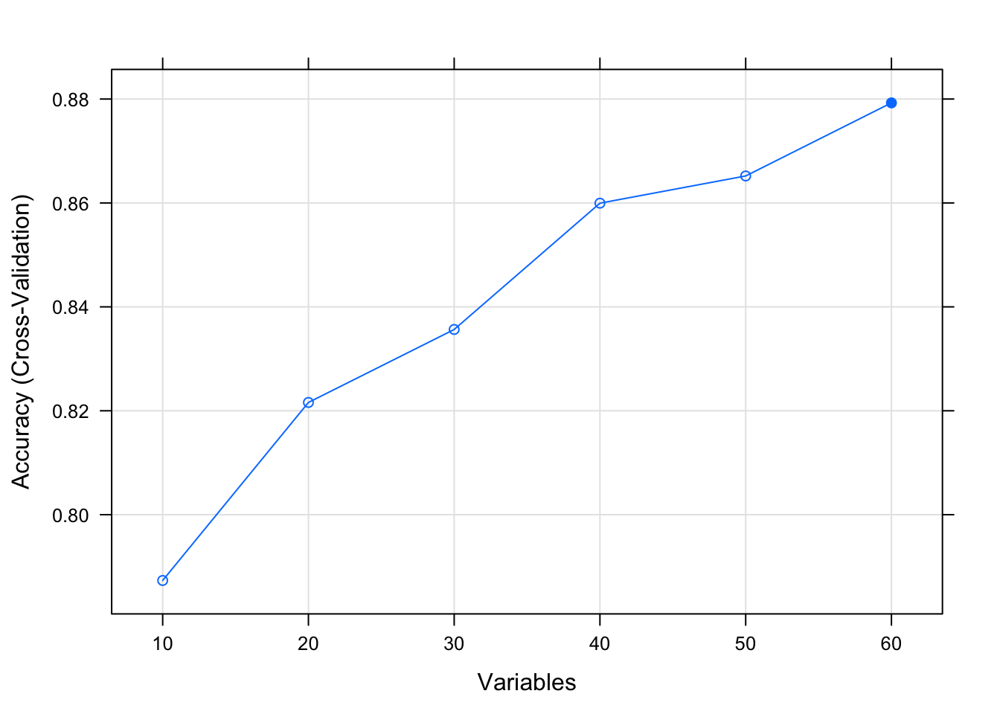
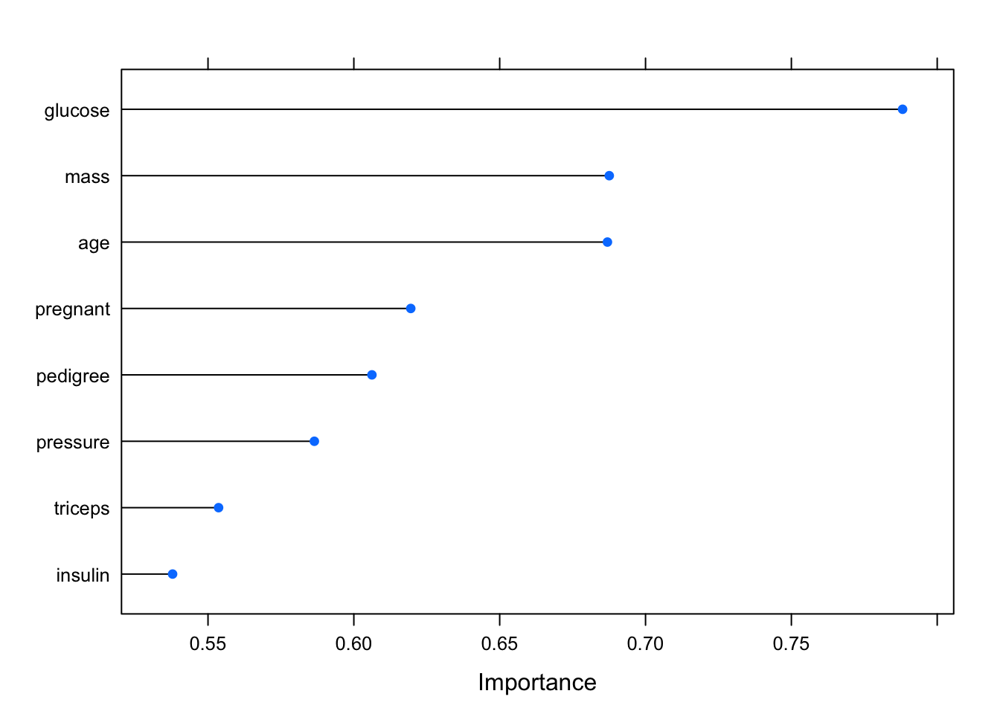

Chapter 3 Prepare Data
3.1 Data Cleaning
# Remove rows with NA
# load library
library(mlbench)
# load dataset
data(BreastCancer)
# summarize dimensions of dataset
dim(BreastCancer)## [1] 699 11# Remove all incomplete rows
dataset <- BreastCancer[complete.cases(BreastCancer),]
# summarize dimensions of resulting dataset
dim(dataset)## [1] 683 11# Update Data Frame to Remove Outliers
# load the libraries
library(mlbench)
# load the dataset
data(PimaIndiansDiabetes)
# calculate stats for pregnant (number of times pregnant)
pregnant.mean <- mean(PimaIndiansDiabetes$pregnant)
pregnant.sd <- sd(PimaIndiansDiabetes$pregnant)
# max reasonable value is within 99.7% of the data (if Gaussian)
pregnant.max <- pregnant.mean + (3*pregnant.sd)
# mark outlier pregnant values as N/A
PimaIndiansDiabetes$pregnant[PimaIndiansDiabetes$pregnant>pregnant.max] <- NA
# Remove rows with NA
# load library
library(mlbench)
# load dataset
data(BreastCancer)
# summarize dimensions of dataset
dim(BreastCancer)## [1] 699 11# Remove all incomplete rows
dataset <- BreastCancer[complete.cases(BreastCancer),]
# summarize dimensions of resulting dataset
dim(dataset)## [1] 683 11 # Impute missing values
# load the libraries
library(mlbench)
library("survival", lib.loc="/usr/local/Cellar/r/3.4.1_1/lib/R/library")
library(Hmisc)
# load the dataset
data(PimaIndiansDiabetes)
# mark a pressure of 0 as N/A, it is impossible
invalid <- 0
PimaIndiansDiabetes$pressure[PimaIndiansDiabetes$pressure==invalid] <- NA
# impute missing pressure values using the mean
#PimaIndiansDiabetes$pressure <- with(PimaIndiansDiabetes, impute(pressure, mean))
# Remove Duplicate Instances
# load the libraries
library(mlbench)
library(datasets)
# load the dataset
data(iris)
dim(iris)## [1] 150 5# remove duplicates
clean <- unique(iris)
dim(clean)## [1] 149 5# Rebalance a dataset using Synthetic Minority Over-sampling Technique (SMOTE)
# load the libraries
library(mlbench)
#library(DMwR)
# load the dataset
data(PimaIndiansDiabetes)
# display count of instances of each class (unbalanced)
table(PimaIndiansDiabetes$diabetes)##
## neg pos
## 500 268# use SMOTE to created a "more balance" version of the dataset
# balanced <- SMOTE(diabetes~., PimaIndiansDiabetes, perc.over=300, perc.under=100)3.2 Feature Selection
# Identify and remove highly correlated features
# load the libraries
library(mlbench)
library("caret", lib.loc="~/Library/R/3.4/library")
# load the data
data(PimaIndiansDiabetes)
# calculate correlation matrix
correlationMatrix <- cor(PimaIndiansDiabetes[,1:8])
# find attributes that are highly corrected (ideally >0.75)
cutoff <- 0.50
highlyCorrelated <- findCorrelation(correlationMatrix, cutoff=cutoff)
# create a new dataset without highly corrected features
dataset <- PimaIndiansDiabetes[,-highlyCorrelated]
# Use RFE and to select features
# load the library
library(mlbench)
library(caret)
# load the data
data(Sonar)
# define the control using a random forest selection function
control <- rfeControl(functions=rfFuncs, method="cv", number=10)
# run the RFE algorithm
x <- Sonar[,1:60]
y <- Sonar[,61]
sizes <- c(10,20,30,40,50,60)
results <- rfe(x, y, sizes=sizes, rfeControl=control)
# summarize the results
print(results)##
## Recursive feature selection
##
## Outer resampling method: Cross-Validated (10 fold)
##
## Resampling performance over subset size:
##
## Variables Accuracy Kappa AccuracySD KappaSD Selected
## 10 0.7873 0.5737 0.10830 0.2150
## 20 0.8216 0.6397 0.10699 0.2154
## 30 0.8356 0.6703 0.13012 0.2591
## 40 0.8600 0.7171 0.10938 0.2205
## 50 0.8652 0.7259 0.08836 0.1812
## 60 0.8793 0.7551 0.08966 0.1819 *
##
## The top 5 variables (out of 60):
## V11, V12, V9, V10, V48# list the chosen features
#predictors(results)
# plot accuracy versus the number of features
plot(results, type=c("g", "o"))
# Rank features by their importance.
# load the libraries
library(mlbench)
library(caret)
# load the dataset
data(PimaIndiansDiabetes)
# prepare training scheme
control <- trainControl(method="cv", number=10)
# train the model
model <- train(diabetes~., data=PimaIndiansDiabetes, method="lvq", preProcess="scale", trControl=control)
# estimate variable importance
importance <- varImp(model, scale=FALSE)
# summarize importance
print(importance)## ROC curve variable importance
##
## Importance
## glucose 0.7881
## mass 0.6876
## age 0.6869
## pregnant 0.6195
## pedigree 0.6062
## pressure 0.5865
## triceps 0.5536
## insulin 0.5379# plot importance
plot(importance)
3.3 Data Transforms
# Center attributes by subtracting the mean
library(datasets)
# load libraries
library("caret", lib.loc="~/Library/R/3.4/library")
# load the dataset
data(iris)
# summarize data
summary(iris[,1:4])## Sepal.Length Sepal.Width Petal.Length Petal.Width
## Min. :4.300 Min. :2.000 Min. :1.000 Min. :0.100
## 1st Qu.:5.100 1st Qu.:2.800 1st Qu.:1.600 1st Qu.:0.300
## Median :5.800 Median :3.000 Median :4.350 Median :1.300
## Mean :5.843 Mean :3.057 Mean :3.758 Mean :1.199
## 3rd Qu.:6.400 3rd Qu.:3.300 3rd Qu.:5.100 3rd Qu.:1.800
## Max. :7.900 Max. :4.400 Max. :6.900 Max. :2.500# calculate the pre-process parameters from the dataset
preprocessParams <- preProcess(iris[,1:4], method=c("center"))
# summarize transform parameters
print(preprocessParams)## Created from 150 samples and 4 variables
##
## Pre-processing:
## - centered (4)
## - ignored (0)# transform the dataset using the parameters
transformed <- predict(preprocessParams, iris[,1:4])
# summarize the transformed dataset
summary(transformed)## Sepal.Length Sepal.Width Petal.Length Petal.Width
## Min. :-1.54333 Min. :-1.05733 Min. :-2.758 Min. :-1.0993
## 1st Qu.:-0.74333 1st Qu.:-0.25733 1st Qu.:-2.158 1st Qu.:-0.8993
## Median :-0.04333 Median :-0.05733 Median : 0.592 Median : 0.1007
## Mean : 0.00000 Mean : 0.00000 Mean : 0.000 Mean : 0.0000
## 3rd Qu.: 0.55667 3rd Qu.: 0.24267 3rd Qu.: 1.342 3rd Qu.: 0.6007
## Max. : 2.05667 Max. : 1.34267 Max. : 3.142 Max. : 1.3007# Standardize numeric attributes so they have zero mean and unit variance.
# load libraries
library(caret)
# load the dataset
data(iris)
# summarize data
summary(iris[,1:4])## Sepal.Length Sepal.Width Petal.Length Petal.Width
## Min. :4.300 Min. :2.000 Min. :1.000 Min. :0.100
## 1st Qu.:5.100 1st Qu.:2.800 1st Qu.:1.600 1st Qu.:0.300
## Median :5.800 Median :3.000 Median :4.350 Median :1.300
## Mean :5.843 Mean :3.057 Mean :3.758 Mean :1.199
## 3rd Qu.:6.400 3rd Qu.:3.300 3rd Qu.:5.100 3rd Qu.:1.800
## Max. :7.900 Max. :4.400 Max. :6.900 Max. :2.500# calculate the pre-process parameters from the dataset
preprocessParams <- preProcess(iris[,1:4], method=c("center", "scale"))
# summarize transform parameters
print(preprocessParams)## Created from 150 samples and 4 variables
##
## Pre-processing:
## - centered (4)
## - ignored (0)
## - scaled (4)# transform the dataset using the parameters
transformed <- predict(preprocessParams, iris[,1:4])
# summarize the transformed dataset
summary(transformed)## Sepal.Length Sepal.Width Petal.Length Petal.Width
## Min. :-1.86378 Min. :-2.4258 Min. :-1.5623 Min. :-1.4422
## 1st Qu.:-0.89767 1st Qu.:-0.5904 1st Qu.:-1.2225 1st Qu.:-1.1799
## Median :-0.05233 Median :-0.1315 Median : 0.3354 Median : 0.1321
## Mean : 0.00000 Mean : 0.0000 Mean : 0.0000 Mean : 0.0000
## 3rd Qu.: 0.67225 3rd Qu.: 0.5567 3rd Qu.: 0.7602 3rd Qu.: 0.7880
## Max. : 2.48370 Max. : 3.0805 Max. : 1.7799 Max. : 1.7064# Scale attributes by dividing by standard deviation
# load libraries
library(caret)
# load the dataset
data(iris)
# summarize data
summary(iris[,1:4])## Sepal.Length Sepal.Width Petal.Length Petal.Width
## Min. :4.300 Min. :2.000 Min. :1.000 Min. :0.100
## 1st Qu.:5.100 1st Qu.:2.800 1st Qu.:1.600 1st Qu.:0.300
## Median :5.800 Median :3.000 Median :4.350 Median :1.300
## Mean :5.843 Mean :3.057 Mean :3.758 Mean :1.199
## 3rd Qu.:6.400 3rd Qu.:3.300 3rd Qu.:5.100 3rd Qu.:1.800
## Max. :7.900 Max. :4.400 Max. :6.900 Max. :2.500# calculate the pre-process parameters from the dataset
preprocessParams <- preProcess(iris[,1:4], method=c("scale"))
preprocessParams <- preProcess(iris[,1:4], method=c("range"))
# summarize transform parameters
print(preprocessParams)## Created from 150 samples and 4 variables
##
## Pre-processing:
## - ignored (0)
## - re-scaling to [0, 1] (4)# transform the dataset using the parameters
transformed <- predict(preprocessParams, iris[,1:4])
# summarize the transformed dataset
summary(transformed)## Sepal.Length Sepal.Width Petal.Length Petal.Width
## Min. :0.0000 Min. :0.0000 Min. :0.0000 Min. :0.00000
## 1st Qu.:0.2222 1st Qu.:0.3333 1st Qu.:0.1017 1st Qu.:0.08333
## Median :0.4167 Median :0.4167 Median :0.5678 Median :0.50000
## Mean :0.4287 Mean :0.4406 Mean :0.4675 Mean :0.45806
## 3rd Qu.:0.5833 3rd Qu.:0.5417 3rd Qu.:0.6949 3rd Qu.:0.70833
## Max. :1.0000 Max. :1.0000 Max. :1.0000 Max. :1.00000# Normalize numeric attributes to the range [0,1]
# load libraries
library(caret)
# load the dataset
data(iris)
# summarize data
summary(iris[,1:4])## Sepal.Length Sepal.Width Petal.Length Petal.Width
## Min. :4.300 Min. :2.000 Min. :1.000 Min. :0.100
## 1st Qu.:5.100 1st Qu.:2.800 1st Qu.:1.600 1st Qu.:0.300
## Median :5.800 Median :3.000 Median :4.350 Median :1.300
## Mean :5.843 Mean :3.057 Mean :3.758 Mean :1.199
## 3rd Qu.:6.400 3rd Qu.:3.300 3rd Qu.:5.100 3rd Qu.:1.800
## Max. :7.900 Max. :4.400 Max. :6.900 Max. :2.500# calculate the pre-process parameters from the dataset
preprocessParams <- preProcess(iris[,1:4], method=c("range"))
# summarize transform parameters
print(preprocessParams)## Created from 150 samples and 4 variables
##
## Pre-processing:
## - ignored (0)
## - re-scaling to [0, 1] (4)# transform the dataset using the parameters
transformed <- predict(preprocessParams, iris[,1:4])
# summarize the transformed dataset
summary(transformed)## Sepal.Length Sepal.Width Petal.Length Petal.Width
## Min. :0.0000 Min. :0.0000 Min. :0.0000 Min. :0.00000
## 1st Qu.:0.2222 1st Qu.:0.3333 1st Qu.:0.1017 1st Qu.:0.08333
## Median :0.4167 Median :0.4167 Median :0.5678 Median :0.50000
## Mean :0.4287 Mean :0.4406 Mean :0.4675 Mean :0.45806
## 3rd Qu.:0.5833 3rd Qu.:0.5417 3rd Qu.:0.6949 3rd Qu.:0.70833
## Max. :1.0000 Max. :1.0000 Max. :1.0000 Max. :1.00000# Box-Cox Transform (attributes must be numeric and >0)
# load libraries
library(mlbench)
library(caret)
# load the dataset
data(PimaIndiansDiabetes)
# summarize pedigree and age
summary(PimaIndiansDiabetes[,7:8])## pedigree age
## Min. :0.0780 Min. :21.00
## 1st Qu.:0.2437 1st Qu.:24.00
## Median :0.3725 Median :29.00
## Mean :0.4719 Mean :33.24
## 3rd Qu.:0.6262 3rd Qu.:41.00
## Max. :2.4200 Max. :81.00# calculate the pre-process parameters from the dataset
preprocessParams <- preProcess(PimaIndiansDiabetes[,7:8], method=c("BoxCox"))
# summarize transform parameters
print(preprocessParams)## Created from 768 samples and 2 variables
##
## Pre-processing:
## - Box-Cox transformation (2)
## - ignored (0)
##
## Lambda estimates for Box-Cox transformation:
## -0.1, -1.1# transform the dataset using the parameters
transformed <- predict(preprocessParams, PimaIndiansDiabetes[,7:8])
# summarize the transformed dataset (note pedigree and age)
summary(transformed)## pedigree age
## Min. :-2.5510 Min. :0.8772
## 1st Qu.:-1.4116 1st Qu.:0.8815
## Median :-0.9875 Median :0.8867
## Mean :-0.9599 Mean :0.8874
## 3rd Qu.:-0.4680 3rd Qu.:0.8938
## Max. : 0.8838 Max. :0.9019# Principal Component Analysis Pre-processing
# load the libraries
library(mlbench)
# load the dataset
data(iris)
# summarize dataset
summary(iris)## Sepal.Length Sepal.Width Petal.Length Petal.Width
## Min. :4.300 Min. :2.000 Min. :1.000 Min. :0.100
## 1st Qu.:5.100 1st Qu.:2.800 1st Qu.:1.600 1st Qu.:0.300
## Median :5.800 Median :3.000 Median :4.350 Median :1.300
## Mean :5.843 Mean :3.057 Mean :3.758 Mean :1.199
## 3rd Qu.:6.400 3rd Qu.:3.300 3rd Qu.:5.100 3rd Qu.:1.800
## Max. :7.900 Max. :4.400 Max. :6.900 Max. :2.500
## Species
## setosa :50
## versicolor:50
## virginica :50
##
##
## # calculate the pre-process parameters from the dataset
preprocessParams <- preProcess(iris, method=c("center", "scale", "pca"))
# summarize transform parameters
print(preprocessParams)## Created from 150 samples and 5 variables
##
## Pre-processing:
## - centered (4)
## - ignored (1)
## - principal component signal extraction (4)
## - scaled (4)
##
## PCA needed 2 components to capture 95 percent of the variance# transform the dataset using the parameters
transformed <- predict(preprocessParams, iris)
# summarize the transformed dataset
summary(transformed)## Species PC1 PC2
## setosa :50 Min. :-2.7651 Min. :-2.67732
## versicolor:50 1st Qu.:-2.0957 1st Qu.:-0.59205
## virginica :50 Median : 0.4169 Median :-0.01744
## Mean : 0.0000 Mean : 0.00000
## 3rd Qu.: 1.3385 3rd Qu.: 0.59649
## Max. : 3.2996 Max. : 2.64521# Independent Component Analysis Pre-processing
# load libraries
library(mlbench)
library(caret)
# load the dataset
data(PimaIndiansDiabetes)
# summarize dataset
summary(PimaIndiansDiabetes[,1:8])## pregnant glucose pressure triceps
## Min. : 0.000 Min. : 0.0 Min. : 0.00 Min. : 0.00
## 1st Qu.: 1.000 1st Qu.: 99.0 1st Qu.: 62.00 1st Qu.: 0.00
## Median : 3.000 Median :117.0 Median : 72.00 Median :23.00
## Mean : 3.845 Mean :120.9 Mean : 69.11 Mean :20.54
## 3rd Qu.: 6.000 3rd Qu.:140.2 3rd Qu.: 80.00 3rd Qu.:32.00
## Max. :17.000 Max. :199.0 Max. :122.00 Max. :99.00
## insulin mass pedigree age
## Min. : 0.0 Min. : 0.00 Min. :0.0780 Min. :21.00
## 1st Qu.: 0.0 1st Qu.:27.30 1st Qu.:0.2437 1st Qu.:24.00
## Median : 30.5 Median :32.00 Median :0.3725 Median :29.00
## Mean : 79.8 Mean :31.99 Mean :0.4719 Mean :33.24
## 3rd Qu.:127.2 3rd Qu.:36.60 3rd Qu.:0.6262 3rd Qu.:41.00
## Max. :846.0 Max. :67.10 Max. :2.4200 Max. :81.00# calculate the pre-process parameters from the dataset
preprocessParams <- preProcess(PimaIndiansDiabetes[,1:8], method=c("center", "scale", "ica"), n.comp=5)
# summarize transform parameters
print(preprocessParams)## Created from 768 samples and 8 variables
##
## Pre-processing:
## - centered (8)
## - independent component signal extraction (8)
## - ignored (0)
## - scaled (8)
##
## ICA used 5 components# transform the dataset using the parameters
transformed <- predict(preprocessParams, PimaIndiansDiabetes[,1:8])
# summarize the transformed dataset
summary(transformed)## ICA1 ICA2 ICA3 ICA4
## Min. :-3.2172 Min. :-1.5754 Min. :-2.93808 Min. :-4.17157
## 1st Qu.:-0.6489 1st Qu.:-0.6823 1st Qu.:-0.72111 1st Qu.:-0.59502
## Median :-0.1394 Median :-0.2596 Median :-0.07368 Median :-0.02422
## Mean : 0.0000 Mean : 0.0000 Mean : 0.00000 Mean : 0.00000
## 3rd Qu.: 0.4684 3rd Qu.: 0.4288 3rd Qu.: 0.73991 3rd Qu.: 0.48353
## Max. : 5.5407 Max. : 6.0184 Max. : 2.37943 Max. : 4.89639
## ICA5
## Min. :-3.0701
## 1st Qu.:-0.7723
## Median : 0.2774
## Mean : 0.0000
## 3rd Qu.: 0.8408
## Max. : 1.4165# Yeo-Johnson Transform
# load libraries
library(mlbench)
library(DMwR)
# load the dataset
data(PimaIndiansDiabetes)
# display count of instances of each class (unbalanced)
table(PimaIndiansDiabetes$diabetes)##
## neg pos
## 500 268# use SMOTE to created a "more balance" version of the dataset
balanced <- SMOTE(diabetes~., PimaIndiansDiabetes, perc.over=300, perc.under=100)